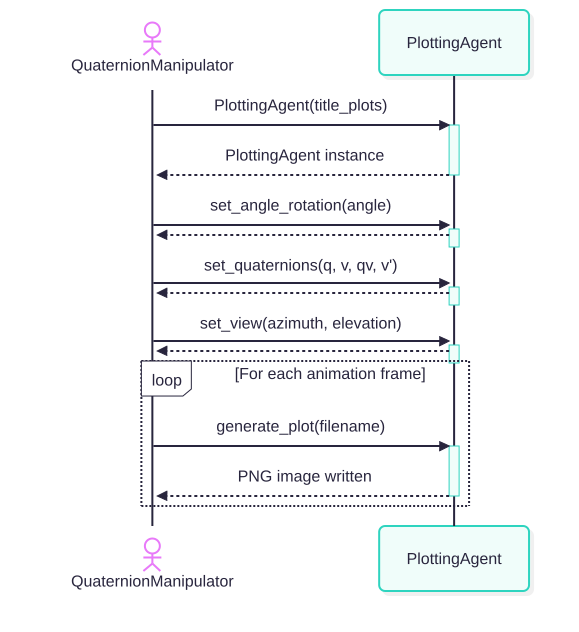
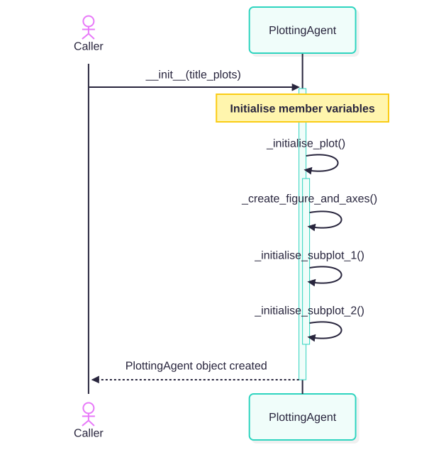
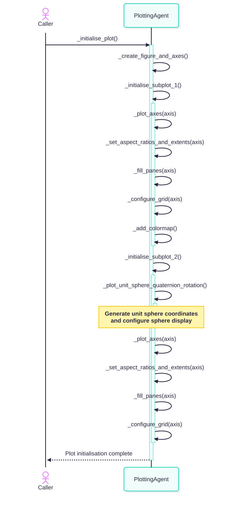

Module : PlottingAgent¶
Module overview¶
This module contains the definition for a single class named PlottingAgent.
This class:
Creates a
QuaternionManipulatorobject.Checks that the correct number of arguments were passed in from the command line.
Runs the
QuaternionManipulatorobject which was created.This object will generate the required plots.
Class : PlottingAgent¶
- class PlottingAgent.PlottingAgent(title_plots)¶
Bases:
object- _add_colormap()¶
- _add_labels_to_plot(axis)¶
- _add_metadata_to_file(filename)¶
- _check_min_max_values()¶
- _configure_grid(axis)¶
- _create_figure_and_axes()¶
- _destroy_plot()¶
- _display_metadata(filename)¶
- _encode_metadata()¶
- _encode_metadata_into_file(filename)¶
- _fill_panes(axis)¶
- _format_component(name, space, value)¶
- _generate_string(scalar_value, i_value, j_value, k_value)¶
- _generate_subplot_1()¶
- _generate_subplot_2()¶
- _initialise_plot()¶
- _initialise_subplot_1()¶
- _initialise_subplot_2()¶
- _plot_axes(axis)¶
- _plot_quaternion_pre_multiply()¶
- _plot_quaternions()¶
- _plot_result_display_diagnostics()¶
- _plot_unit_sphere_quaternion_pre_multiply()¶
- _plot_unit_sphere_quaternion_rotation()¶
- _remove_artifacts_from_subplots()¶
- _save_plot_to_file(filename)¶
- _set_aspect_ratios_and_extents(axis)¶
- _set_title_and_legend(axis)¶
Set the title and legend for the specified plot or sub-plot.
This method sets the title and legend for the plot or sub-plot which was passed to the argument axis.
- Parameters:
axis (matplotlib.axes.Axes) – The plot or sub-plot which is to be operated on.
- Returns:
This method only updates the internal state of the object.
- Return type:
None
- _set_title_and_legend_quaternion_pre_multiply()¶
- generate_plot(filename)¶
- set_angle_rotation(angle_rotation)¶
- set_quaternions(quaternion_axis_rotation, quaternion_to_rotate, quaternion_pre_multiply, quaternion_rotated)¶
- set_view(azimuth_view, elevation_view)¶
|
Source code : PlottingAgent.py¶
1import numpy as np
2import matplotlib
3matplotlib.use("QtAgg")
4import matplotlib.pyplot as plt
5from matplotlib.lines import Line2D
6from matplotlib.ticker import MultipleLocator
7from matplotlib.colors import LinearSegmentedColormap
8from matplotlib.cm import ScalarMappable
9from matplotlib.colors import Normalize
10import json
11
12# Import the Python Image Library, aka PIL.
13
14from PIL import Image
15from PIL.PngImagePlugin import PngInfo
16
17import colorsys
18
19import GlobalSettings
20
21
22show_plots = False
23
24my_colormap = LinearSegmentedColormap.from_list(
25 "my_rainbow",
26 [
27 "red",
28 "orange",
29 "yellow",
30 "green",
31 "blue",
32 "indigo",
33 "violet"
34 ]
35)
36
37
38class PlottingAgent :
39
40 def __init__(
41
42 self,
43 title_plots
44 ) :
45
46 self.fig = None
47 self.ax1 = None
48 self.ax2 = None
49
50 self.title_plots = title_plots
51
52 self.v = np.array([1.2, 0.8, 0.5])
53
54 self.angle_rotation = None
55
56 self.quaternion_axis_rotation = None
57 self.quaternion_to_rotate = None
58 self.quaternion_pre_multiply = None
59 self.quaternion_rotated = None
60
61 self.quaternion_pre_multiply_min = None
62 self.quaternion_pre_multiply_max = None
63
64 self.plot_handle_axis_rotation = None
65 self.plot_handle_to_rotate = None
66 self.plot_handle_quaternion_pre_multiply = None
67 self.plot_handle_quaternion_pre_multiply_history = None
68 self.plot_handle_quaternion_rotated = None
69 self.plot_handle_quaternion_rotated_history = None
70 self.plot_handle_surface = None
71
72 # Component arrays to hold the history of the rotated vector.
73
74 self.x_components = []
75 self.y_components = []
76 self.z_components = []
77
78 self.azimuth_view = None
79 self.elevation_view = None
80
81 self.rgb_value_min = colorsys.hsv_to_rgb(0, 0, 1.0)
82 self.rgb_value_max = colorsys.hsv_to_rgb(0, 0, 1.0)
83
84 self.label_quaternion_axis_rotation = ""
85 self.label_quaternion_to_rotate = ""
86 self.label_quaternion_pre_multiply = ""
87 self.label_quaternion_pre_multiply_min = ""
88 self.label_quaternion_pre_multiply_max = ""
89 self.label_quaternion_rotated = ""
90 self.label_angle_rotation = ""
91
92 self._initialise_plot()
93
94
95 def _initialise_plot(self) :
96
97 nameMethod = "PlottingAgent::initialise_plot"
98
99
100 print(nameMethod + " : Enter")
101
102 self._create_figure_and_axes()
103
104 self._initialise_subplot_1()
105 self._initialise_subplot_2()
106
107 print(nameMethod + " : Exit")
108
109
110 def _add_colormap(self) :
111
112 nameMethod = "PlottingAgent::_add_colormap"
113
114
115 # Place a color scale on the right hand side of this sub-plot.
116
117 norm = Normalize(vmin=-1.0, vmax=1.0)
118
119 sm = ScalarMappable(
120 norm=norm,
121 cmap=my_colormap
122 )
123 sm.set_array([])
124
125 cbar = self.fig.colorbar(
126 sm,
127 ax=self.ax1,
128 location="left",
129 pad=0.05,
130 shrink=0.75
131 )
132
133 cbar.set_label("qv scalar component (w)")
134
135
136 def _initialise_subplot_1(self) :
137
138 nameMethod = "PlottingAgent::_initialise_subplot_1"
139
140 axis = self.ax1
141
142
143 print(nameMethod + " : Enter")
144
145 # self._plot_unit_sphere_quaternion_pre_multiply()
146 self._plot_axes(axis)
147
148 print(nameMethod + " : About to invoke : self.set_aspect_ratios_and_extents")
149 self._set_aspect_ratios_and_extents(axis)
150
151 self._fill_panes(axis)
152 self._configure_grid(axis)
153 # self.create_static_labels()
154 self._add_colormap()
155
156 print(nameMethod + " : Exit")
157
158
159 def _initialise_subplot_2(self) :
160
161 nameMethod = "PlottingAgent::initialise_subplot_2"
162
163 axis = self.ax2
164
165
166 print(nameMethod + " : Enter")
167
168 self._plot_unit_sphere_quaternion_rotation()
169 self._plot_axes(axis)
170
171 print(nameMethod + " : About to invoke : self.set_aspect_ratios_and_extents")
172 self._set_aspect_ratios_and_extents(axis)
173
174 self._fill_panes(axis)
175 self._configure_grid(axis)
176 # self.create_static_labels()
177
178 print(nameMethod + " : Exit")
179
180
181 def set_angle_rotation(
182
183 self,
184 angle_rotation
185 ) :
186
187 self.angle_rotation = angle_rotation
188
189
190 def set_quaternions(
191
192 self,
193 quaternion_axis_rotation,
194 quaternion_to_rotate,
195 quaternion_pre_multiply,
196 quaternion_rotated
197 ) :
198
199 self.quaternion_axis_rotation = quaternion_axis_rotation
200 self.quaternion_to_rotate = quaternion_to_rotate
201 self.quaternion_pre_multiply = quaternion_pre_multiply
202 self.quaternion_rotated = quaternion_rotated
203
204
205 def _format_component(
206
207 self,
208 name,
209 space,
210 value
211 ) :
212
213 if value < 0 :
214
215 if space :
216
217 return f"- {name}{abs(value):.3f}"
218
219 else :
220
221 return f"-{name}{abs(value):.3f}"
222
223 else :
224
225 if space :
226
227 return f"+ {name}{value:.3f}"
228
229 else :
230
231 return f" {name}{value:.3f}"
232
233
234 def _generate_string(
235
236 self,
237 scalar_value,
238 i_value,
239 j_value,
240 k_value
241 ) :
242
243 label = self.format_component("", False, scalar_value) + " "
244 label += f"{self.format_component('i', True, i_value)} "
245 label += f"{self.format_component('j', True, j_value)} "
246 label += f"{self.format_component('k', True, k_value)}"
247
248 return label
249
250
251 # Invoked by : _initialise_plot
252
253 def _create_figure_and_axes(self) :
254
255 # self.fig = plt.figure(figsize=(8, 8))
256
257 self.fig, (self.ax1, self.ax2) = plt.subplots(
258
259 1, 2,
260 figsize=(10, 4),
261 subplot_kw={'projection': '3d'}
262 )
263
264
265 def _plot_axes(
266
267 self,
268 axis
269 ) :
270
271 # Plot;
272 #
273 # x axis
274 # y axis
275 # z axis
276
277 axis.quiver(
278 -1.2, 0, 0,
279 2.4, 0, 0,
280 color='black',
281 linewidth=1,
282 arrow_length_ratio=0.025
283 )
284
285 axis.quiver(
286 0, -1.2, 0,
287 0, 2.4, 0,
288 color='black',
289 linewidth=1,
290 arrow_length_ratio=0.025
291 )
292
293 axis.quiver(
294 0, 0, -1.2,
295 0, 0, 2.4,
296 color='black',
297 linewidth=1,
298 arrow_length_ratio=0.025
299 )
300
301
302 def _plot_unit_sphere_quaternion_pre_multiply(self) :
303
304 axis = self.ax1
305
306
307 # ----------------------------
308 # Plot the unit sphere.
309 # ----------------------------
310
311 u = np.linspace(0, 2 * np.pi, 100)
312 v_sphere = np.linspace(0, np.pi, 100)
313
314 x = np.outer(np.cos(u), np.sin(v_sphere))
315 y = np.outer(np.sin(u), np.sin(v_sphere))
316 z = np.outer(np.ones_like(u), np.cos(v_sphere))
317
318 if self.quaternion_pre_multiply is None :
319
320 hue_value = 0.5
321
322 else :
323
324 hue_value = ((self.quaternion_pre_multiply.x) * 0.5) + 0.5
325
326 rgb_value = colorsys.hsv_to_rgb(
327
328 hue_value, # hue (0–1)
329 1.0, # saturation
330 1.0 # value
331 )
332
333 # If this sub-plot already contains a plot of a unit sphere, then delete it.
334
335 if self.plot_handle_surface is not None :
336
337 self.plot_handle_surface.remove()
338
339 self.plot_handle_surface = axis.plot_surface(x, y, z,
340 color=rgb_value,
341 alpha=0.2,
342 linewidth=0
343 )
344
345 axis.plot_wireframe(
346 x, y, z,
347 color='black',
348 linewidth=0.4,
349 rstride=4,
350 cstride=4
351 )
352
353
354 def _plot_unit_sphere_quaternion_rotation(self) :
355
356 axis = self.ax2
357
358
359 # ----------------------------
360 # Plot the unit sphere.
361 # ----------------------------
362
363 u = np.linspace(0, 2 * np.pi, 100)
364 v_sphere = np.linspace(0, np.pi, 100)
365
366 x = np.outer(np.cos(u), np.sin(v_sphere))
367 y = np.outer(np.sin(u), np.sin(v_sphere))
368 z = np.outer(np.ones_like(u), np.cos(v_sphere))
369
370 # ax.plot_surface(
371 # x, y, z,
372 # alpha=0.25,
373 # linewidth=0,
374 # antialiased=True
375 # )
376
377 # ax.plot_wireframe(
378 # x, y, z,
379 # color='gray',
380 # linewidth=0.5,
381 # alpha=0.5,
382 # rstride=5,
383 # cstride=5
384 # )
385
386 hue_value = 0.5
387
388 rgb_value = colorsys.hsv_to_rgb(
389
390 hue_value, # hue (0–1)
391 1.0, # saturation
392 1.0 # value
393 )
394
395 axis.plot_surface(
396 x, y, z,
397 color=rgb_value,
398 alpha=0.2,
399 linewidth=0
400 )
401
402 axis.plot_wireframe(
403 x, y, z,
404 color='black',
405 linewidth=0.4,
406 rstride=4,
407 cstride=4
408 )
409
410
411 def _plot_quaternion_pre_multiply(self) :
412
413 nameMethod = "PlottingAgent::plot_quaternion_pre_multiply"
414
415 sub_plot = self.ax1
416
417
418 self._plot_unit_sphere_quaternion_pre_multiply()
419
420 self.plot_handle_quaternion_pre_multiply = self.ax1.quiver(
421
422 0, 0, 0,
423 self.quaternion_pre_multiply.x, self.quaternion_pre_multiply.y, self.quaternion_pre_multiply.z,
424 color='blue',
425 linewidth=1,
426 arrow_length_ratio=0.1
427 )
428
429 # If w = 0, plot this quaternion in the pure imaginary space as well.
430
431 if abs(self.quaternion_pre_multiply.w) < 0.001 :
432
433 print(nameMethod + " : ~~~~~~~~~~~~~~~~~~~~~~~~~~~~~~~~~~~~~~~~")
434 print(nameMethod + " : ~~~~~~~~~~~~~~~~~~~~~~~~~~~~~~~~~~~~~~~~")
435 print(nameMethod + " : Plotting vector in the pure imaginary space")
436 print(nameMethod + " : ~~~~~~~~~~~~~~~~~~~~~~~~~~~~~~~~~~~~~~~~")
437 print(nameMethod + " : ~~~~~~~~~~~~~~~~~~~~~~~~~~~~~~~~~~~~~~~~")
438
439 self.ax2.quiver(
440
441 0, 0, 0,
442 self.quaternion_pre_multiply.x, self.quaternion_pre_multiply.y, self.quaternion_pre_multiply.z,
443 color='blue',
444 linewidth=1,
445 arrow_length_ratio=0.1
446 )
447
448 if GlobalSettings.plot_quaternion_pre_multiply_history :
449
450 hue_value = ((self.quaternion_pre_multiply.x) * 0.5) + 0.5
451
452 rgb_value = colorsys.hsv_to_rgb(
453
454 hue_value, # hue (0–1)
455 1.0, # saturation
456 1.0 # value
457 )
458
459 markersize_value = (hue_value * 4) + 2
460
461 if self.quaternion_pre_multiply.w < 0 :
462
463 marker_value = 'v'
464
465 else :
466
467 marker_value = '^'
468
469 sub_plot.plot(
470
471 self.quaternion_pre_multiply.x,
472 self.quaternion_pre_multiply.y,
473 self.quaternion_pre_multiply.z,
474 marker=marker_value,
475 markersize=markersize_value,
476 linestyle='-',
477 color=rgb_value
478 )
479
480
481 def _plot_quaternions(self) :
482
483 nameMethod = "PlottingAgent::plot_quaternion_rotation"
484
485 sub_plot = self.ax2
486
487
488 # Plot an arrow from the origin which represents : the axis of rotation
489
490 self.plot_handle_quaternion_axis_rotation = sub_plot.quiver(
491
492 0, 0, 0,
493 self.quaternion_axis_rotation.x, self.quaternion_axis_rotation.y, self.quaternion_axis_rotation.z,
494 color='red',
495 linewidth=1,
496 arrow_length_ratio=0.1
497 )
498
499 # Plot an arrow from the origin which represents : the vector/quaternion which is to be rotated.
500
501 self.plot_handle_quaternion_to_rotate = sub_plot.quiver(
502
503 0, 0, 0,
504 self.quaternion_to_rotate.x, self.quaternion_to_rotate.y, self.quaternion_to_rotate.z,
505 color='green',
506 linewidth=1,
507 arrow_length_ratio=0.1
508 )
509
510 # Plot an arrow from the origin which represents : the vector/quaternion after it has been rotated.
511
512 self.plot_handle_quaternion_rotated = sub_plot.quiver(
513
514 0, 0, 0,
515 self.quaternion_rotated.x, self.quaternion_rotated.y, self.quaternion_rotated.z,
516 color='magenta',
517 linewidth=1,
518 arrow_length_ratio=0.1
519 )
520
521 # Add the point to the list of points.
522
523 self.x_components.append(self.quaternion_rotated.x)
524 self.y_components.append(self.quaternion_rotated.y)
525 self.z_components.append(self.quaternion_rotated.z)
526
527 print(f"Length self.x_components = {len(self.x_components):d}")
528 print(f"Length self.y_components = {len(self.y_components):d}")
529 print(f"Length self.z_components = {len(self.z_components):d}")
530
531 print(nameMethod + " : self.x_components = ")
532 print(self.x_components)
533 print(nameMethod + " : self.y_components = ")
534 print(self.y_components)
535 print(nameMethod + " : self.z_components = ")
536 print(self.z_components)
537
538 if GlobalSettings.plot_quaternion_rotated_history :
539
540 sub_plot.plot(
541
542 self.quaternion_rotated.x,
543 self.quaternion_rotated.y,
544 self.quaternion_rotated.z,
545 marker='.',
546 linestyle='-',
547 color='magenta'
548 )
549
550
551 def _check_min_max_values(self) :
552
553 if (
554 (self.quaternion_pre_multiply_max is None) or
555 (self.quaternion_pre_multiply.w > self.quaternion_pre_multiply_max)
556 ) :
557
558 self.quaternion_pre_multiply_max = self.quaternion_pre_multiply.w
559
560 hue_value = ((self.quaternion_pre_multiply.w) * 0.5) + 0.5
561
562 self.rgb_value_max = colorsys.hsv_to_rgb(
563
564 hue_value, # hue (0–1)
565 1.0, # saturation
566 1.0 # value
567 )
568
569 # Check if the scalar component of qv has reached a new minimum.
570
571 if self.quaternion_pre_multiply_min is None :
572
573 self.quaternion_pre_multiply_min = self.quaternion_pre_multiply.w
574
575 else :
576
577 if (self.quaternion_pre_multiply.w < self.quaternion_pre_multiply_min) :
578
579 self.quaternion_pre_multiply_min = self.quaternion_pre_multiply.w
580
581 hue_value = ((self.quaternion_pre_multiply.w) * 0.5) + 0.5
582
583 self.rgb_value_min = colorsys.hsv_to_rgb(
584
585 hue_value, # hue (0–1)
586 1.0, # saturation
587 1.0 # value
588 )
589
590
591 def _add_labels_to_plot(
592
593 self,
594 axis
595 ) :
596
597 # Label vector tip
598
599 # label_vector_a_tip = "<" + str(vector_a[0]) + ", " + str(vector_a[1]) + ", " + str(vector_a[2]) + ">"
600 # label_quaternion_to_rotate_tip = "<" + str(quaternion_to_rotate[0]) + ", " + str(quaternion_to_rotate[1]) + ", " + str(quaternion_to_rotate[2]) + ">"
601 # label_vector_c_tip = "<" + str(quaternion[1]) + ", " + str(quaternion[1]) + ", " + str(quaternion[2]) + ", " + str(quaternion[2]) + ">"
602 # label_vector_d_tip = "<" + str(vector_d[0]) + ", " + str(vector_d[1]) + ", " + str(vector_d[2]) + ">"
603
604 # label_vector_a_tip = f"Axis : 0.000 + i{vector_a[0]:.3f} + j{vector_a[1]:.3f} + k{vector_a[2]:.3f}"
605 # label_quaternion_to_rotate_tip = f"Vector : 0.000 + i{quaternion_to_rotate[0]:.3f} + j{quaternion_to_rotate[1]:.3f} + k{quaternion_to_rotate[2]:.3f}"
606 # label_vector_c_tip = f"Partial : {quaternion[0]:.3f} + i{quaternion[1]:.3f} + j{quaternion[2]:.3f} + k{quaternion[3]:.3f}"
607
608 label_quaternion_axis_rotation = self.generate_string(self.quaternion_axis_rotation.w,
609 self.quaternion_axis_rotation.x,
610 self.quaternion_axis_rotation.y,
611 self.quaternion_axis_rotation.z)
612
613 label_quaternion_to_rotate = self.generate_string(self.quaternion_to_rotate.w, self.quaternion_to_rotate.x,
614 self.quaternion_to_rotate.y, self.quaternion_to_rotate.z)
615
616 label_quaternion_pre_multiply = self.generate_string(self.quaternion_pre_multiply.w,
617 self.quaternion_pre_multiply.x,
618 self.quaternion_pre_multiply.y,
619 self.quaternion_pre_multiply.z)
620
621 label_quaternion_rotated = self.generate_string(self.quaternion_rotated.w, self.quaternion_rotated.x,
622 self.quaternion_rotated.y, self.quaternion_rotated.z)
623
624 self.check_min_max_values()
625
626 label_quaternion_pre_multiply_min = self.format_component("", False, self.quaternion_pre_multiply_min)
627 label_quaternion_pre_multiply_max = self.format_component("", False, self.quaternion_pre_multiply_max)
628
629 self.label_quaternion_axis_rotation = f"Axis of rotation (q) : " + label_quaternion_axis_rotation
630 self.label_quaternion_to_rotate = f"Quaternion to rotate (v) : " + label_quaternion_to_rotate
631 self.label_quaternion_pre_multiply = f"Pre multiplication (qv) : " + label_quaternion_pre_multiply
632 self.label_quaternion_pre_multiply_min = " - qv scalar min value : " + label_quaternion_pre_multiply_min
633 self.label_quaternion_pre_multiply_max = " - qv scalar max value : " + label_quaternion_pre_multiply_max
634 self.label_quaternion_rotated = f"Quaternion rotated (v') : " + label_quaternion_rotated
635 self.label_angle_rotation = f"Angle of rotation = {self.angle_rotation:8.3f} degrees"
636
637 axis.text(
638 1.3, 0, 0,
639 "x",
640 color="black"
641 )
642
643 axis.text(
644 0, 1.3, 0,
645 "y",
646 color="black"
647 )
648
649 axis.text(
650 0, 0, 1.3,
651 "z",
652 color="black"
653 )
654
655 # ax.text(
656 # quaternion_to_rotate[0], quaternion_to_rotate[1], quaternion_to_rotate[2],
657 # label_quaternion_to_rotate_tip,
658 # color="green"
659 # )
660
661 # ax.text(
662 # quaternion[1], quaternion[2], quaternion[3],
663 # label_vector_c_tip,
664 # color="blue"
665 # )
666
667 # ax.text(
668 # quaternion_rotated[0], quaternion_rotated[1], quaternion_rotated[2],
669 # label_quaternion_rotated_tip,
670 # color="magenta"
671 # )
672
673
674 def _encode_metadata(self) :
675
676 nameMethod = "encode_metadata"
677
678
679 self.metadata = {
680 "view" : {
681 "azimuth" : self.azimuth_view,
682 "elevation" : self.elevation_view
683 },
684 "rotation" : {
685 "angle" : self.angle_rotation,
686 "axis" : {
687 "scalar" : self.quaternion_axis_rotation.w,
688 "x" : self.quaternion_axis_rotation.x,
689 "y" : self.quaternion_axis_rotation.y,
690 "z" : self.quaternion_axis_rotation.z
691 },
692 },
693 "quaternion_to_rotate": {
694 "scalar" : self.quaternion_to_rotate.w,
695 "x" : self.quaternion_to_rotate.x,
696 "y" : self.quaternion_to_rotate.y,
697 "z" : self.quaternion_to_rotate.z
698 },
699 "quaternion_pre_multiply": {
700 "scalar" : self.quaternion_pre_multiply.w,
701 "x" : self.quaternion_pre_multiply.x,
702 "y" : self.quaternion_pre_multiply.y,
703 "z" : self.quaternion_pre_multiply.z
704 },
705 "quaternion_rotated": {
706 "scalar" : self.quaternion_rotated.w,
707 "x" : self.quaternion_rotated.x,
708 "y" : self.quaternion_rotated.y,
709 "z" : self.quaternion_rotated.z
710 },
711 }
712
713
714 def _display_metadata(
715
716 self,
717 filename
718 ) :
719
720 nameMethod = "display_metadata"
721
722
723 # Check that the JSON was written into the file properly.
724
725 with Image.open(filename) as img:
726
727 metadata = json.loads(img.text["com.example.simulation"])
728
729 w = metadata["quaternion_pre_multiply"]["scalar"]
730 x = metadata["quaternion_pre_multiply"]["x"]
731 y = metadata["quaternion_pre_multiply"]["y"]
732 z = metadata["quaternion_pre_multiply"]["z"]
733
734 quaternion_pre_multiply = np.quaternion(w,x,y,z)
735
736 print(f"quaternion_pre_multiply = <{quaternion_pre_multiply.w:.03f}, {quaternion_pre_multiply.x:.03f}, {quaternion_pre_multiply.y:.03f}, {quaternion_pre_multiply.z:.03f}>")
737
738 print("========================================")
739 print("JSON metadata from the file :")
740 print("-----------------------------")
741 print("View azimuth = " + str(metadata["view"]["azimuth"]))
742 print("View elevation = " + str(metadata["view"]["elevation"]))
743 print("Rotation angle = " + str(metadata["rotation"]["angle"]))
744 print("Rotation axis = " + str(metadata["rotation"]["axis"]["scalar"]))
745 print("========================================")
746
747
748 def _set_aspect_ratios_and_extents(
749
750 self,
751 axis
752 ) :
753
754 nameMethod = "set_aspect_ratios_and_extents"
755
756
757 print(nameMethod + " : Enter")
758
759 # ----------------------------
760 # Set equal aspect ratio
761 # ----------------------------
762
763 max_extent = max(
764 np.max(np.abs(self.v)),
765 1.0
766 )
767
768 axis.set_xlim([-max_extent, max_extent])
769 axis.set_ylim([-max_extent, max_extent])
770 axis.set_zlim([-max_extent, max_extent])
771
772 axis.set_box_aspect([1, 1, 1])
773
774 print(nameMethod + " : Exit")
775
776
777 # Invoked by : PlottingAgent::_generate_subplot_1
778
779 def _set_title_and_legend_quaternion_pre_multiply(self) :
780
781 nameMethod = "PlottingAgent::_set_title_and_legend_quaternion_pre_multiply"
782
783
784 print(nameMethod + " : Enter")
785
786 # ----------------------------
787 # Labels
788 # ----------------------------
789
790 # ax.set_xlabel('x')
791 # ax.set_ylabel('y')
792 # ax.set_zlabel('z')
793 # self.ax1.set_title(self.title_plots)
794
795 legend_elements = [
796 # Line2D([0], [0], color='red', lw=1, label=self.label_quaternion_axis_rotation),
797 # Line2D([0], [0], color='green', lw=1, label=self.label_quaternion_to_rotate),
798 Line2D([0], [0], color='none', lw=1, label=self.label_quaternion_pre_multiply),
799 Line2D([0], [0], linestyle='None', marker=None, label=self.label_quaternion_pre_multiply_min),
800 Line2D([0], [0], linestyle='None', marker=None, label=self.label_quaternion_pre_multiply_max),
801 # Line2D([0], [0], color='magenta', lw=1, label=self.label_quaternion_rotated),
802 Line2D([0], [0], linestyle='None', marker=None, label=self.label_angle_rotation)
803 ]
804
805 legend = self.ax1.legend(
806 handles=legend_elements,
807 prop={
808 "family": "Liberation Mono",
809 "size": 10
810 },
811 loc='lower center',
812 fontsize=10
813 )
814
815 hue_value = ((self.quaternion_pre_multiply.w) * 0.5) + 0.5
816
817 rgb_value_local = colorsys.hsv_to_rgb(
818
819 hue_value, # hue (0–1)
820 1.0, # saturation
821 1.0 # value
822 )
823
824 print(nameMethod + " : @@@@@@@@@@@@@@@@@@@@@@@@@@@@@@@@@@@@@@@@")
825 print(nameMethod + " : @@@@@@@@@@@@@@@@@@@@@@@@@@@@@@@@@@@@@@@@")
826 print(nameMethod + f" : About to set legend color to = <{hue_value:f}, 1.0, 1.0>")
827 print(nameMethod + " : @@@@@@@@@@@@@@@@@@@@@@@@@@@@@@@@@@@@@@@@")
828 print(nameMethod + " : @@@@@@@@@@@@@@@@@@@@@@@@@@@@@@@@@@@@@@@@")
829
830 legend.get_texts()[2].set_color(rgb_value_local)
831
832 print(nameMethod + " : Exit")
833
834
835 # Invoked by : _generate_subplot_2(
836
837 def _set_title_and_legend(
838
839 self,
840 axis
841 ):
842
843 """
844 Set the title and legend for the specified plot or sub-plot.
845
846 This method sets the title and legend for the plot or sub-plot which was passed to the argument axis.
847
848 Args:
849 axis (matplotlib.axes.Axes):
850 The plot or sub-plot which is to be operated on.
851
852 Returns:
853 None:
854 This method only updates the internal state of the object.
855 """
856
857 nameMethod = "set_title_and_legend"
858
859
860 print(nameMethod + " : Enter")
861
862 # ----------------------------
863 # Labels
864 # ----------------------------
865
866 # ax.set_xlabel('x')
867 # ax.set_ylabel('y')
868 # ax.set_zlabel('z')
869 axis.set_title(self.title_plots)
870
871 legend_elements = [
872 Line2D([0], [0], color='red', lw=1, label=self.label_quaternion_axis_rotation),
873 Line2D([0], [0], color='green', lw=1, label=self.label_quaternion_to_rotate),
874 Line2D([0], [0], color='none', lw=1, label=self.label_quaternion_pre_multiply),
875 Line2D([0], [0], linestyle='None', marker=None, label=self.label_quaternion_pre_multiply_min),
876 Line2D([0], [0], linestyle='None', marker=None, label=self.label_quaternion_pre_multiply_max),
877 Line2D([0], [0], color='magenta', lw=1, label=self.label_quaternion_rotated),
878 Line2D([0], [0], linestyle='None', marker=None, label=self.label_angle_rotation)
879 ]
880
881 legend = axis.legend(
882 handles=legend_elements,
883 prop={
884 "family": "Liberation Mono",
885 "size": 10
886 },
887 loc='upper right',
888 fontsize=10
889 )
890
891 # If the scalar part of the quaternion is not close in value to 0, then display its text in red
892
893 # if abs(self.quaternion_pre_multiply.x) > 0.001 :
894
895 hue_value = ((self.quaternion_pre_multiply.w) * 0.5) + 0.5
896
897 rgb_value_local = colorsys.hsv_to_rgb(
898
899 hue_value, # hue (0–1)
900 1.0, # saturation
901 1.0 # value
902 )
903
904 print(nameMethod + " : @@@@@@@@@@@@@@@@@@@@@@@@@@@@@@@@@@@@@@@@")
905 print(nameMethod + " : @@@@@@@@@@@@@@@@@@@@@@@@@@@@@@@@@@@@@@@@")
906 print(nameMethod + f" : About to set legend color to = <{hue_value:f}, 1.0, 1.0>")
907 print(nameMethod + " : @@@@@@@@@@@@@@@@@@@@@@@@@@@@@@@@@@@@@@@@")
908 print(nameMethod + " : @@@@@@@@@@@@@@@@@@@@@@@@@@@@@@@@@@@@@@@@")
909
910 legend.get_texts()[2].set_color(rgb_value_local)
911
912 print(nameMethod + " : Exit")
913
914
915 def _fill_panes(
916
917 self,
918 axis
919 ) :
920
921 axis.xaxis.pane.fill = False
922 axis.yaxis.pane.fill = False
923 axis.zaxis.pane.fill = False
924
925
926 def _configure_grid(
927
928 self,
929 axis
930 ) :
931
932 # ax.grid(False)
933
934 axis.xaxis.set_major_locator(MultipleLocator(1))
935 axis.yaxis.set_major_locator(MultipleLocator(1))
936 axis.zaxis.set_major_locator(MultipleLocator(1))
937
938
939 def _add_metadata_to_file(
940
941 self,
942 filename
943 ) :
944
945 with Image.open(filename) as img :
946
947 info = PngInfo()
948 info.add_itxt(
949 "com.example.simulation",
950 json.dumps(self.metadata, indent=2)
951 )
952
953 img.save(filename, pnginfo=info)
954
955
956 def _plot_result_display_diagnostics(self) :
957
958 nameMethod = "PlottingAgent::_plot_result_display_diagnostics"
959
960
961 print(nameMethod + " : Enter")
962
963 print(nameMethod + " : >>>>>>>>>>>>>>>>>>>>>>>>>>>>>>>>>>>>>>>>")
964 print(nameMethod + " : self.angle_rotation = " + str(self.angle_rotation))
965 print(nameMethod + " : <<<<<<<<<<<<<<<<<<<<<<<<<<<<<<<<<<<<<<<<")
966
967 print(nameMethod + " : About to invoke : self.plot_quaternions")
968
969 print(nameMethod + " : Exit")
970
971
972 def set_view(
973
974 self,
975 azimuth_view,
976 elevation_view
977 ) :
978
979 self.azimuth_view = azimuth_view
980 self.elevation_view = elevation_view
981
982
983 def _generate_subplot_1(self) :
984
985 nameMethod = "PlottingAgent::_generate_subplot_1"
986
987
988 print(nameMethod + " : Enter")
989
990 self._plot_quaternion_pre_multiply()
991 # self.add_labels_to_plot(axis)
992 self._set_title_and_legend_quaternion_pre_multiply()
993
994 self.ax1.view_init(
995
996 elev=self.elevation_view,
997 azim=self.azimuth_view
998 )
999
1000 print(nameMethod + " : Exit")
1001
1002
1003 def _generate_subplot_2(self) :
1004
1005 nameMethod = "PlottingAgent::_generate_subplot_2"
1006
1007
1008 print(nameMethod + " : Enter")
1009
1010 self._plot_quaternions()
1011 # self.add_labels_to_plot(axis)
1012 # self.set_title_and_legend(axis)
1013
1014 self.ax2.view_init(
1015
1016 elev=self.elevation_view,
1017 azim=self.azimuth_view
1018 )
1019
1020 print(nameMethod + " : Exit")
1021
1022
1023 def _save_plot_to_file(
1024
1025 self,
1026 filename
1027 ) :
1028
1029 nameMethod = "PlottingAgent::_save_plot_to_file"
1030
1031
1032 print(nameMethod + " : Enter")
1033
1034 print("Saving the figure to file : " + str(filename) + "\n")
1035
1036 self.fig.savefig(
1037
1038 filename,
1039 dpi=300,
1040 bbox_inches="tight"
1041 )
1042
1043 print(nameMethod + " : Exit")
1044
1045
1046 def _encode_metadata_into_file(
1047
1048 self,
1049 filename
1050 ) :
1051
1052 nameMethod = "PlottingAgent::_encode_metadata_and_add_to_file"
1053
1054
1055 print(nameMethod + " : Enter")
1056
1057 self._encode_metadata()
1058 self._add_metadata_to_file(filename)
1059 self._display_metadata(filename)
1060
1061 print(nameMethod + " : Exit")
1062
1063
1064 def _remove_artifacts_from_subplots(self) :
1065
1066 nameMethod = "PlottingAgent::_remove_artifacts_from_subplots"
1067
1068
1069 print(nameMethod + " : Enter")
1070
1071 # Remove certain artifacts that are used by the sub-plot self.ax1.
1072 #
1073 # Keep the following artifacts however, because they don't change and will simply get redrawn in the next plot.
1074 #
1075 # self.plot_handle_quaternion_to_rotate.remove()
1076 # self.plot_handle_quaternion_axis_rotation.remove()
1077 #
1078 # Also, keep the history plot points as they just get added to.
1079
1080 self.plot_handle_quaternion_rotated.remove()
1081
1082 # Remove the artifacts from the plot self.ax2
1083
1084 self.plot_handle_quaternion_pre_multiply.remove()
1085
1086 print(nameMethod + " : Exit")
1087
1088 # Invoked by : QuaternionManipulator::generate_plots
1089
1090 def generate_plot(
1091
1092 self,
1093 filename
1094 ) :
1095
1096 nameMethod = "PlottingAgent::generate_plot"
1097
1098
1099 print(nameMethod + " : Enter")
1100
1101 self._plot_result_display_diagnostics()
1102
1103 # Generate the sub-plots for both self.ax1 and self.ax2.
1104
1105 self._generate_subplot_1()
1106 self._generate_subplot_2()
1107
1108 self._save_plot_to_file(filename)
1109
1110 self._encode_metadata_into_file(filename)
1111
1112 if show_plots :
1113
1114 plt.show()
1115
1116 self._remove_artifacts_from_subplots()
1117
1118 print(nameMethod + " : Exit")
1119
1120
1121 def _destroy_plot(self) :
1122
1123 nameMethod = "PlottingAgent::destroy_plot"
1124
1125
1126 print(nameMethod + " : Enter")
1127
1128 # Close the figure so that we can free up the memory it is using.
1129
1130 plt.close(self.fig)
1131
1132 self.fig = None
1133 self.ax = None
1134
1135 print(nameMethod + " : Exit")
PlottingAgent UML Sequence diagram for public methods only¶


PlottingAgent UML Sequence diagram for the method : __method__¶


PlottingAgent UML Sequence diagram for the method : _initialise_plot¶

